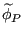
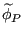
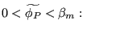
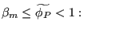
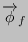
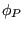
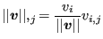
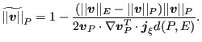

Next: General approach for solving Up: Convective interpolation Previous: High resolution schemes Contents
For incompressible flows a scheme was proposed for the convective facial
values consisting of a linear combination of the upwind scheme and the facial
values
 [36]:
[36]:
Here,  is a piecewise linear function of
:
is a piecewise linear function of
:
| (522) | ||
|  | (523) | |
|  | (524) | |
| (525) |
Due to the
second term in the above equation
 is a nonlinear
function of .  should be in the range
should be in the range
 . In CalculiX
. In CalculiX
 .
.
For the velocity
 the scalar
is used to
calculate
the scalar
is used to
calculate  . Since
. Since
|  | (526) |
one obtains
|  | (527) |